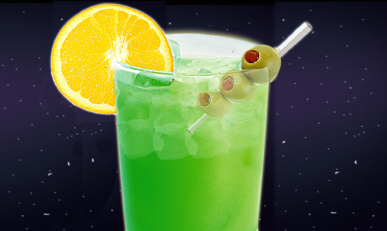

Pan Galactic Gargle Blaster

The best drink in existence, from "Hitchhiker's Guide to the Galaxy"
An intricate and dangerous cocktail, invented by Zaphod Beeblebrox.
Purported to make you feel like "having your brains smashed out by a slice of lemon wrapped around a large gold brick".
Ingredients
- (1 bottle) Old Janx Spirit
- (1 measure) Sea water from Santraginus V
- (3 cubes) Acturan Mega-Gin
- (4 liters) Fallian marsh gas
- (1 teaspoon) Qualactin Hypermint extract
- (1) Angolian Suntiger tooth
- Zamphuor
- (1) Olive
- Take the juice from one bottle of Ol' Janx Spirit.
- Pour into it one measure of water from the seas of Santraginus V.
- Allow three cubes of Acturan Mega-Gin to melt into the mixture.
- Allow four liters of Fallian marsh gas to bubble through it.
- Over the back of a silver spoon, float a measure of Qualactin Hypermint extract.
- Drop in the tooth of the Angolian Suntiger.
- Sprinkle Zamphuor.
- Add an olive.
- Drink... but... very carefully...